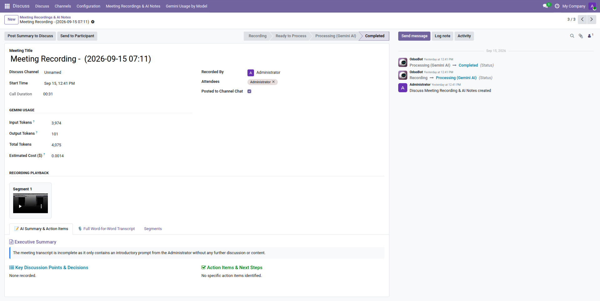
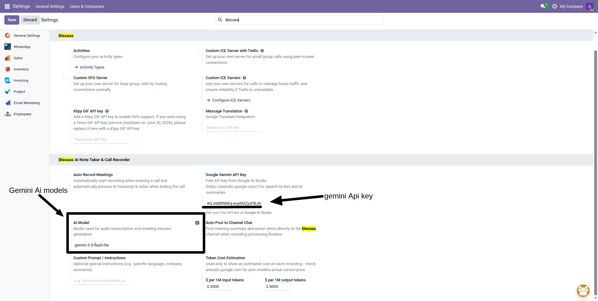
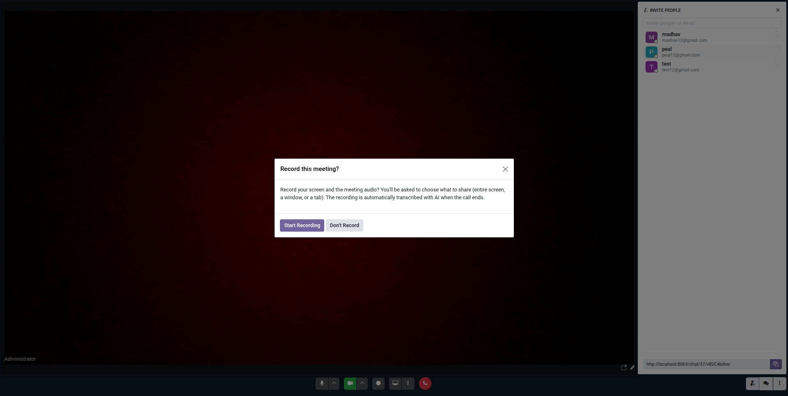
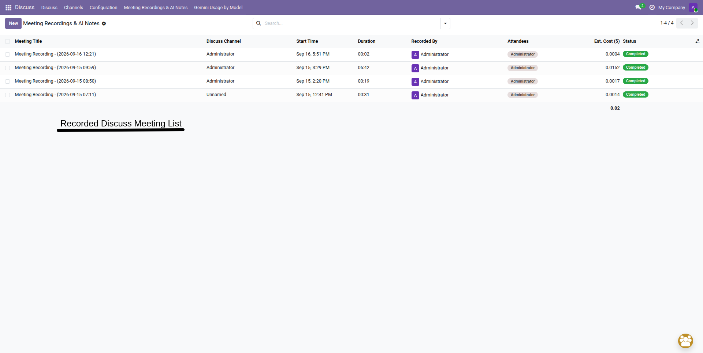
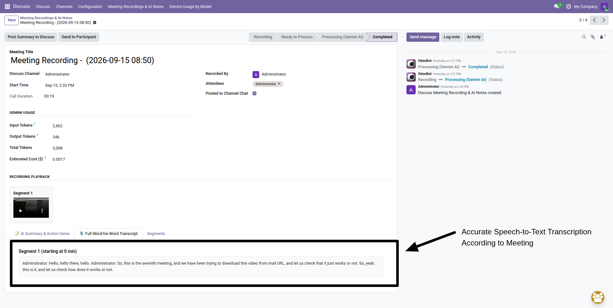
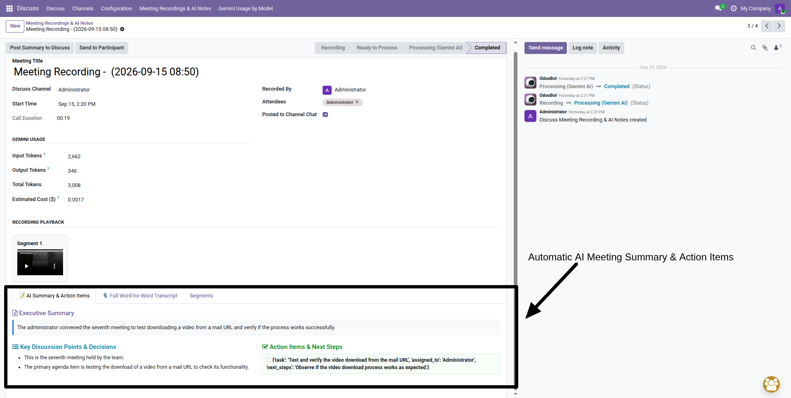

Turn every Odoo Discuss voice & video call into instant business value. Automatically record multi-party meetings, transcribe spoken dialogue word-for-word, isolate speaker voices, and generate executive summaries, key decisions, and action items powered by Google Gemini AI (100% Free Tier API).

Never manually take meeting notes again or lose track of critical client decisions.
Zero-Click Auto RecordingStarts recording automatically the moment any Discuss voice or video call starts and cleanly wraps up when you hang up. Zero manual clicks required. | Google Gemini Multimodal AIPowered by Gemini 2.0 Flash and 1.5 Flash. Transcribes speech accurately with context, identifying key agenda topics, decisions, and actionable task checklists. | Web Audio Multi-Stream MixerSeamlessly blends the host microphone and all remote participant audio streams directly in the browser with audio normalization and dynamic compression. |
Auto-Post to Channel ChatInstantly publishes the executive summary, decisions, and action items checklist right into the Discuss channel or group chat for all attendees. | Segmented Chunked ArchitectureMulti-hour meetings are sliced into progressive 5-minute segments and uploaded in the background. Eliminates browser tab crashes and Odoo payload limits. | 100% Free Tier APIUtilizes Google AI Studio's generous free tier. Enjoy unlimited daily requests and top-tier accuracy without expensive third-party SaaS subscriptions. |
A robust client-side capture pipeline coupled with Gemini AI processing.
Join Discuss CallWebRTC session establishes. Web Audio API mixer and isolated participant recorders activate seamlessly. |
Chunked Audio MixBrowser mixes local mic + all remote peer voices with dynamic compression, saving 5-minute segments progressively. |
Gemini AI ProcessingSegments are transcribed with speaker attribution, followed by a final synthesis pass for global meeting minutes. |
Instant Minutes & ChatTranscript, summary & action items are archived in Odoo and auto-posted directly into Discuss channel chatter. |
Explore how each feature and interface screen operates inside Odoo 19, 18, and 17.
STEP 1 • SETUP & CONFIGURATION
1-Minute Setup & AI Model SelectionConfigure your free Google Gemini credentials, pick your model, and customize AI language settings under Settings > Discuss. |
100% Free Google AI Studio API |

Feature Highlight 1 Free Google Gemini API KeySimply paste your free API key from Google AI Studio. No credit card required, with unlimited daily requests on the free tier. | Feature Highlight 2 Dynamic Model Selection & FallbackChoose | Feature Highlight 3 Custom Prompt & Automation TogglesToggle auto-recording and auto-posting, and add custom instructions (e.g. "Summarize in Spanish" or specific industry jargon). |
STEP 2 • LIVE CALL RECORDING
Live Call Recording & Consent PromptJoin any Discuss voice or video call with an intelligent consent dialog, 1-click screen capture, and live recording timer. |
Live REC & Audio Mixer |

Feature Highlight 1 Interactive Consent DialogParticipants receive a clear consent popup upon joining, allowing them to choose whether to record or skip for sensitive topics. | Feature Highlight 2 1-Click Screen & Tab SharingDirect OS display picker allows capturing entire screen, application window, or browser tab at a smooth 30 FPS video stream. | Feature Highlight 3 Dynamic 2-Second Peer RescanWeb Audio mixer automatically scans and mixes late joiners into the audio stream with dynamic compression so no voices are lost. |
STEP 3 • CENTRAL ARCHIVE
Centralized Meeting Recordings & Notes ArchiveSystematically organize, search, and review past meeting recordings across channels and departments from one unified view. |
Centralized Knowledge Base |

Feature Highlight 1 Status Badges LifecycleColor-coded badges ( | Feature Highlight 2 Duration & Attendee TrackingDisplays exact meeting length in minutes/seconds, recorded by user tag, attendee count, and direct link to the Discuss channel. | Feature Highlight 3 Multi-Level Grouping & SearchGroup and filter calls by Discuss Channel, Date, Host, or perform instant full-text search across all meeting titles and notes. |
STEP 4 • TRANSCRIPTION & PLAYBACK
Full Transcript, In-Browser Playback & Token AuditInspect word-for-word dialogue, replay audio/video segments directly in Odoo, and review exact AI token usage and estimated cost. |
Exact Token & Cost Tracking |

Feature Highlight 1 Built-In HTML5 Media PlayerReplay meeting audio or screen recording directly in Odoo without downloading heavy files, with instant timeline scrubbing. | Feature Highlight 2 Speaker Voice DiarizationIsolates individual participant voices so the AI accurately attributes dialogue lines to real user names rather than generic numbers. | Feature Highlight 3 Token & Cost TransparencyAudits real |
STEP 5 • CHANNEL DELIVERY
Instant Discuss Channel Chatter DeliveryEliminate communication gaps across your team. Formatted meeting minutes, summaries, and action checklists are published instantly into Discuss. |
Auto-Posted to Chatter |

Feature Highlight 1 Executive SummaryA concise, high-level overview summarizing the core purpose, discussion flow, and key highlights of the meeting in seconds. | Feature Highlight 2 Key Decisions & PointsBulleted list capturing all strategic decisions, technical agreements, and team conclusions reached during the call. | Feature Highlight 3 Action Items ChecklistInteractive task checklist specifying assigned team members and next steps for immediate operational follow-through. |
Comparing traditional monolithic recording addons versus Elsner's resilient segmented stream engine.
Traditional Recording ModulesBrowser Tab Crashes: Holds entire 1-2 hour multi-gigabyte recording in browser RAM until the call ends. Odoo HTTP Payload Limits: Massive single file uploads fail due to reverse-proxy (Nginx) timeout and client_max_body_size errors.Single Voice Only: Only captures the host microphone, completely missing remote participants. Expensive Paid APIs: Forces ongoing monthly subscriptions to OpenAI Whisper or third-party bots. Odoo Worker Starvation: Synchronous AI processing freezes Odoo websocket workers, disconnecting live users. | Elsner Discuss AI Note Taker5-Minute Chunked Slicing: Constant low browser memory footprint; recordings of unlimited length never crash. Progressive Background Upload: Slices upload asynchronously in chunks with automatic retry mechanisms. Web Audio Multi-Stream Mixer: Full multi-speaker capture with dynamic compression and 2-second peer rescan. 100% Free Google Gemini API: Generous free tier with multi-model discovery and automatic fallbacks. Background Cursor Threading: Asynchronous execution ensures zero Odoo UI lag and zero server CPU load. |
Everything you need to know about setting up, transcription, multi-speaker audio mixing, and storage.
Yes! Google AI Studio provides a generous free tier for Gemini models (including Gemini 2.0 Flash, 1.5 Flash, and Flash-Lite). You get unlimited daily requests subject to standard per-minute rate limits, which is more than enough for daily business meetings without paid subscriptions or third-party bot fees.
Yes. The module uses the browser's native Web Audio API (AudioContext) combined with an automated 2-second RTC rescan. It mixes your local microphone with all incoming remote WebRTC audio streams into a unified high-fidelity audio stream with gain boost (+1.4x) and dynamic compression.
All audio recordings, video segments, and generated transcripts are securely stored inside your own Odoo database as standard binary attachments (ir.attachment) linked to your discuss.meeting.recording records. Your data stays 100% private to your company with zero external SaaS storage.
Yes. Whether you start a 1-on-1 voice call or a full group video conference with screen sharing, you can record your entire screen, window, or tab at 30 FPS. All audio tracks are mixed and transcribed with complete accuracy.
Yes. Under Settings > Discuss, you can enter custom instructions (e.g., "Translate meeting notes to Spanish", "Focus on technical architecture decisions", or company-specific acronyms). Gemini will tailor the notes accordingly.
Yes, 100% compatible with both! It runs seamlessly on Odoo 19, 18, and 17 Community and Enterprise editions, across On-Premise Ubuntu/Debian servers, Docker containers, and Odoo.sh cloud hosting.
No. Audio mixing and compression happen entirely inside the user's browser via Web Audio API. Background processing runs in dedicated asynchronous threads on independent database cursors, ensuring zero server CPU strain and zero UI blocking.
Yes. You can uncheck "Auto-Record Meetings" in Settings. When disabled, users are prompted with a consent dialog upon joining a call, or can click the "Record & AI Notes" button in the Discuss call bar anytime.
The frontend captures isolated audio voice samples from each individual participant during the call. These isolated clips are passed to Gemini alongside the master mix, allowing the AI to match voices and label transcript lines with real participant names instead of generic "Speaker 1" labels.
Because recordings are uploaded in 5-minute segments progressively, all completed segments up to the disconnect point are already securely stored in Odoo. Administrators can simply click the "Finalize Now" button on the recording to generate full AI notes from all uploaded segments.
EMPOWERING BUSINESSES THROUGH TECHNOLOGY
At Elsner, we believe in building solutions that meet real business goals. With years of expertise in Odoo ERP, AI integrations, and custom software development, our team transforms your operational challenges into opportunities. This Discuss AI Note Taker seamlessly combines the power of Odoo Discuss with Google Gemini AI to elevate team productivity, accountability, and decision-making.
Innovation DrivenCutting-edge AI solutions for modern teams. | Trusted PartnerLong-term reliability and dedicated support. | Expert TeamSkilled Odoo specialists with 10+ years experience. | Client SuccessYour business growth is our top priority. |
24/7 SupportPrompt technical help whenever you need it. | Global PresenceServing clients across USA, Europe & Asia. | HeadquartersAhmedabad, Gujarat, India | Odoo ExpertsCertified experts in Odoo ERP & AI Apps. |